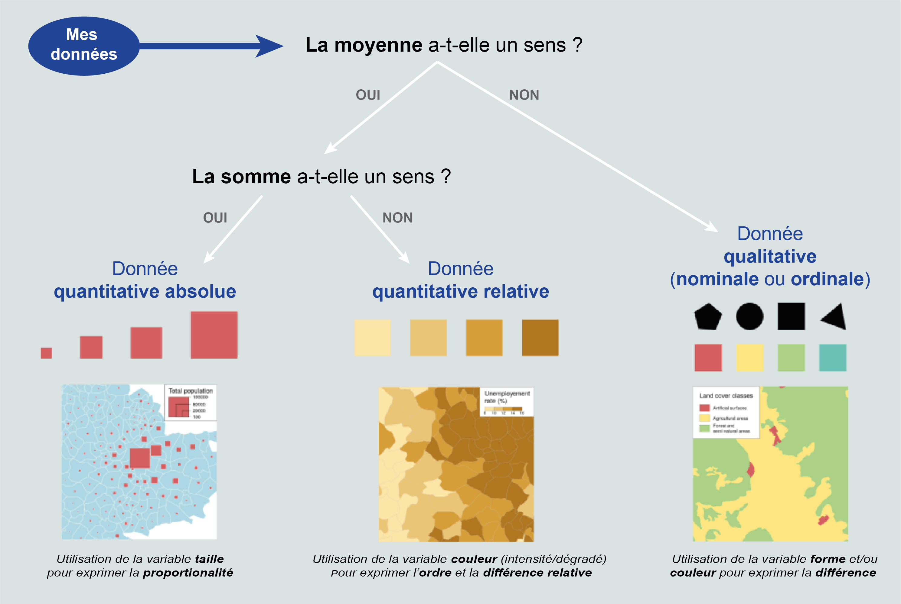
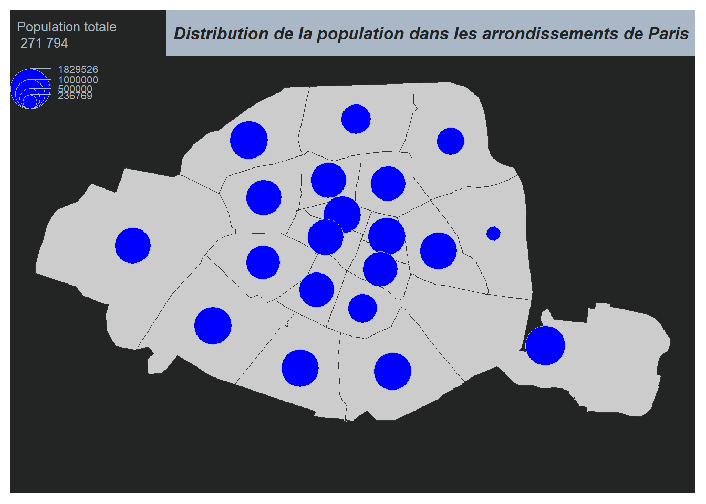
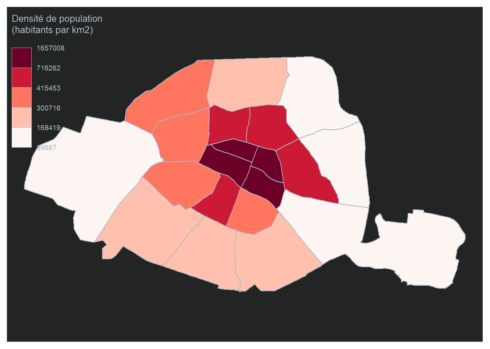
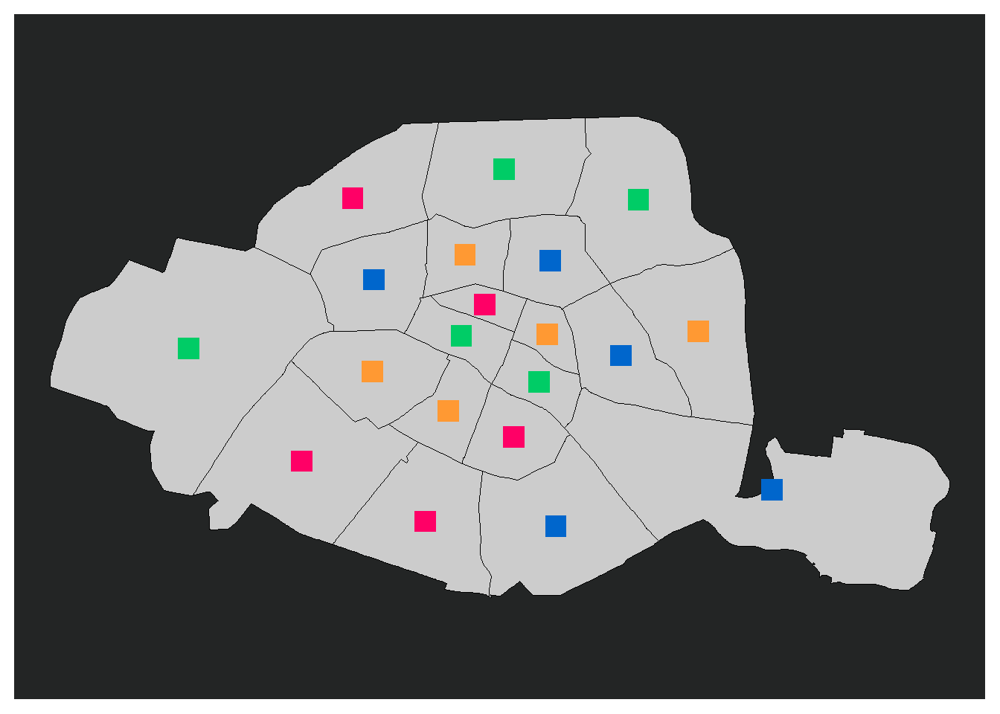
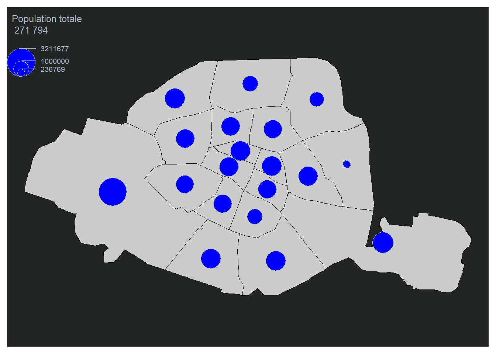

Produire des cartes thématiques avec Mapsf
Nous allons réaliser des cartes avec R à l’aide du package “mapsf”.
Nous allons réaliser une carte de Paris. Pour cet exemple, j’ai récupéré les données sur le site de Paris Data : https://opendata.paris.fr/pages/catalogue/?disjunctive.theme&disjunctive.publisher
Affichage du fond de carte correspondant aux limites des arrondissements auquel je vais ajouter les voies d’eau en couche d’habillage.
# ----- Import des données -----
arrondissements <- st_read(dsn = "https://opendata.paris.fr/explore/dataset/arrondissements/download/?format=geojson&timezone=Europe/Berlin&lang=fr")Reading layer `OGRGeoJSON' from data source
`https://opendata.paris.fr/explore/dataset/arrondissements/download/?format=geojson&timezone=Europe/Berlin&lang=fr'
using driver `GeoJSON'
Simple feature collection with 20 features and 9 fields
Geometry type: POLYGON
Dimension: XY
Bounding box: xmin: 2.224078 ymin: 48.81558 xmax: 2.469761 ymax: 48.90216
Geodetic CRS: WGS 84cours_deau<-st_read(dsn="https://opendata.paris.fr/api/explore/v2.1/catalog/datasets/plan-de-voirie-voies-deau/exports/geojson?lang=fr&timezone=Europe%2FBerlin")Reading layer `OGRGeoJSON' from data source
`https://opendata.paris.fr/api/explore/v2.1/catalog/datasets/plan-de-voirie-voies-deau/exports/geojson?lang=fr&timezone=Europe%2FBerlin'
using driver `GeoJSON'
Simple feature collection with 58 features and 25 fields
Geometry type: MULTIPOLYGON
Dimension: XY
Bounding box: xmin: 2.224081 ymin: 48.81924 xmax: 2.450555 ymax: 48.90207
Geodetic CRS: WGS 84#Dans un premier temps je réalise mon fond de carte avec les arrondissments de Paris
mf_map(x = arrondissements, border = "black")
#Je rajoute les cours d'eau sur mon fond de carte avec l'argument "add=TRUE"
mf_map(x=cours_deau,lwd=2,border="lightblue",col="lightblue",add=TRUE)
Les différents types de cartes

Les cartes à symboles proportionnels
Les cartes à symboles proportionnels sont les méthode de représentations graphiques à utiliser pour visualiser des variables de stocks (variables quantitatives absolues pour lesquelles la somme et la moyenne ont une signification).
Sur la carte, j’affiche l’effectif de la population de chaque arrondissement et j’ajoute la légende et un titre.
arrondissements$pop <- c(1012687, 903036, 1369857, 1491027, 1672009, 1506475, 1637163, 1603380, 1637542, 1059282, 1494945, 1436205, 1705774, 1425805, 236769, 1668605, 1674568, 1539668, 1421827, 1829526) #INSEE,2021
mf_map(x = arrondissements, border = "black")
mf_map(x=cours_deau,lwd=2,border="lightblue",col="lightblue",add=TRUE)
mf_map(
x = arrondissements,
var = "pop",
type = "prop",
leg_title = "Population totale\12 271 794",
col="#F39487",
add= TRUE
)
mf_title("Distribution de la population dans Paris")
# Les cartes choroplèthes
Les cartes choroplèthes sont les représentations graphiques à utiliser pour visualiser des ratios (des variables quantitatives relatives pour lesquelles la moyenne a un sens, mais dont la somme n’a pas de sens).
Sur la carte, j’affiche la densité de population de chaque arrondissement. J’utilise la méthode des quantiles pour discréditer cette variable et j’utilise une palette de couleur avec dégradé pour représenter l’ordre entre mes valeurs.
#création de la variable densite
arrondissements$DENS <- 1e6 * arrondissements$pop / as.numeric(st_area(arrondissements))
mf_map(
x = arrondissements,
var = "DENS",
type = "choro",
breaks = "quantile",
pal = "Reds",
lwd = 1,
leg_title = "Densité de population\n(habitants par km2)",
leg_val_rnd = 0
)
mf_title("Distribution de la population dans Paris (INSEE,2021)")
Remarque: la faible densité de population des 12e et 16e arrondissement est faible, notamment en raison des bois de Vincennes et de Boulogne qui les composent.
On peut aussi représenter ce type de variable sous d’autres forme: On travaille avec les bords politiques des mairies de chaque arrondissement.
bords_politiques <- c("PS", "EELV", "PS", "PS", "DVD", "LR", "LR", "LR", "DVD", "PS", "PS", "PS", "PS", "EELV", "LR", "LR", "LR", "PS", "PS", "EELV")
arrondissements <- cbind(arrondissements, bords_politiques)
colors <- c("PS" = "#FF0066", "EELV" = "#00CC66", "DVD" = "#FF9933", "LR" = "#0066CC")
arr_c<-st_centroid(arrondissements)
mf_map(x = arrondissements, border = "black")
mf_map(x=cours_deau,lwd=2,border="lightblue",col="lightblue",add=TRUE)
# Ajouter des triangles remplis pour chaque arrondissement en fonction de son bord politique
mf_map(
x = arr_c,
var = "bords_politiques",
pch = 15,
cex = 2,
col = colors,
lwd = 1,
leg_title = "Densité de population\n(habitants par km2)",
digits = 0,
add = TRUE
)
Et si on regroupait deux arrondissement ?
Pour cet exemple nous prenons le cas où, dans les statistiques que nous avons à représenter, les données, des 15e et 16e doivent être sommées. Il faut que les polygones du fond de carte représentant ces deux arrondissements soient fusionnés.
L’idée globale du code ci-dessous c’est de fusionner les deux polygones (celui du 15e Vaugirard et du 16e Passy) et on recré toute la ligne de notre tableau de donnée pour pouvoir la fusionner avec celui-ci.
# ---- Fusionner deux polygones ---- #
# Sélectionner les deux polygones que vous souhaitez fusionner
poly1 <- arrondissements[arrondissements$l_aroff == "Passy", ] # sélectionne le polygone avec le nom "Passy"
poly2 <- arrondissements[arrondissements$l_aroff == "Vaugirard", ] # sélectionne le polygone avec le nom "Vaugirard"
# Fusionner les polygones
new_poly <- st_union(poly1, poly2) # fusionne les deux polygones sélectionnés en un seul polygoneWarning: attribute variables are assumed to be spatially constant throughout
all geometries# Ajouter la surface, la population, le périmètre et les coordonnées géographiques des deux polygones
#l'idée c'est de recréer une nouvelle ligne pour notre nouveau polygone pour qu'on puisse le réinsérer dans notre tableau.
new_poly$surface <- new_poly$surface + new_poly$surface.1 # ajouter la surface des deux polygones
new_poly$n_sq_co <- new_poly$n_sq_co + new_poly$n_sq_co.1 # ajouter la population des deux polygones
new_poly$perimetre <- new_poly$perimetre + new_poly$perimetre.1 # ajouter le périmètre des deux polygones
new_poly$n_sq_ar <- new_poly$n_sq_ar + new_poly$n_sq_ar.1 # ajouter les coordonnées géographiques des deux polygones
new_poly$pop<-new_poly$pop+ new_poly$pop.1
new_poly$DENS<-new_poly$DENS+new_poly$DENS.1
# Modifier les informations de localisation
new_poly$l_aroff <- "un nouvel arrondissement" # changer le nom de l'arrondissement
new_poly$l_ar <- "xxème Ardt" # changer le numéro de l'arrondissement
new_poly$c_ar <- "xx" # changer le code de l'arrondissement
new_poly$c_arinsee <- "75xxxx" # changer le code INSEE de la commune
new_poly$bords_politiques<-"PS" #changer le bord politique du nouvel arrondissement
# Sélectionner certaines colonnes pour créer un nouvel objet de données
arrondissements_test <- subset(new_poly, select = c(c_ar, l_aroff, surface, l_ar, n_sq_co, c_arinsee, n_sq_ar, perimetre, geom_x_y,pop, DENS,bords_politiques))
# à noter qu'il est très important de mettre les éléments dans le même ordre que celui du tableau
# Remplacer les informations de l'arrondissement "Passy" dans l'objet "arrondissements" par les nouvelles informations
arrondissements[arrondissements$l_aroff == "Passy", ] <- arrondissements_test
# Afficher la carte de l'objet "arrondissements" avec les contours en noir
mf_map(x = arrondissements, border = "black")
En savoir plus sur mapsf:
Pour la rédaction de cet article je me suis grandement inspirée du travail de Timothée Giraud.
https://rcarto.github.io/ined2022/07_mise_en_page.html
http://riatelab.github.io/mapsf http://rgeomatic.hypotheses.org/2077